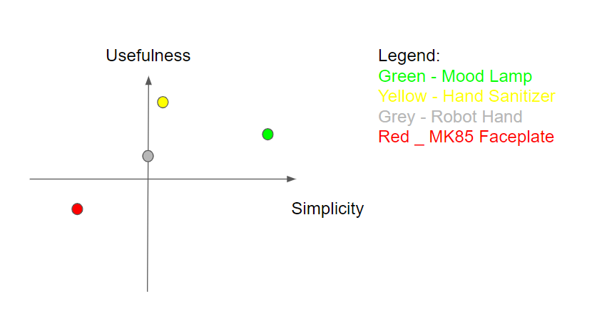
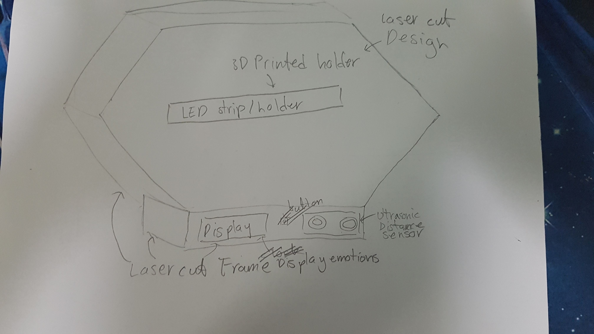
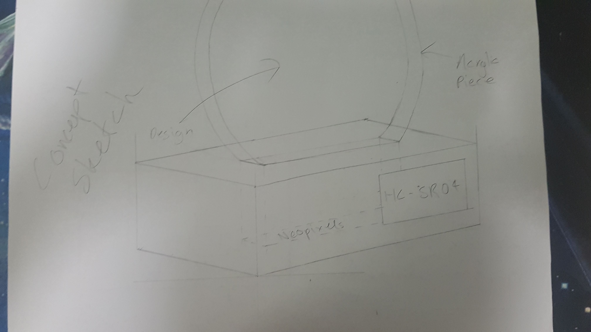
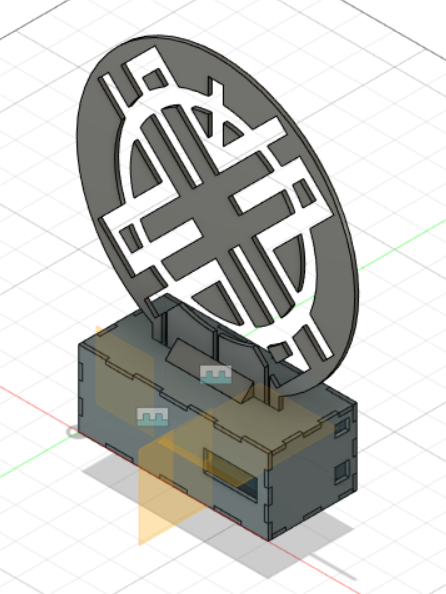
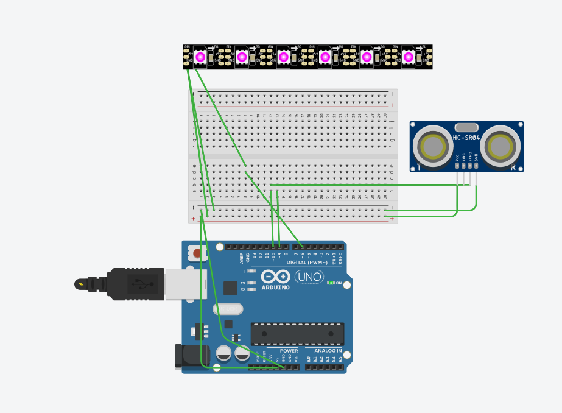

1. A frame (Laser cut)
2. 5v LED neopixel Strip
3. Arduino
4. Wires
5. 16x2 LCD display
6. Wire connectors
7. LED Support(3D Print)
8. Ultrasonic Distance Sensor
9. 2 * A3 Clear Acrylic
Firstly, I needed an idea for my project. That's where i when to Instructables and Arduino's project Hub to brainstorm.
Next, I shortlisted a couple of ideas I was interested in:
-> A Touchless Hand Sanitizer
-> MK 85 Iron Man Electronic Faceplate
-> Mood Lamp
-> Voice Controlled robot Hand
Afterwards, I constructed a 2x2 Design Matrix to determine the best idea to build given the 3 weeks time frame.

With the design matrix & limitations given, I figured the Mood Lamp was the best choice.
After having an idea, I moved on to the design process. Below is my initial sketch without any research.

Upon further research, I found some Acrylic Lamps, and I decided I would go with a design similar to that. Below is my concept sketch after further research.

As for the design that was going to be etched on my acrylic piece, I was inspired by Gfriend's lastest album(Song of the Siren) symbol.
After deciding on the design of my etching, I proceeded to design my Mood Lamp in Fusion 360 with all that I have learnt so far.

After designing the model in Fusion 360, all that's left to do is the Programming, Fabrication and Assembly.
Firstly, I installed the library for adafruit Nexopixels.
After interfacing my Ultrasonic Sensor.
I spliced the Adafruit NeoPixel buttoncycler example with my ultrasonic Sensor code to produce the final code.
Afterwards, I used Tinkercad the test my code.

After getting it to work, I moved on to my Fabrication Process
{kind=link}
{kind=link}
{kind=link}
{kind=link}
{kind=link}
{kind=link}